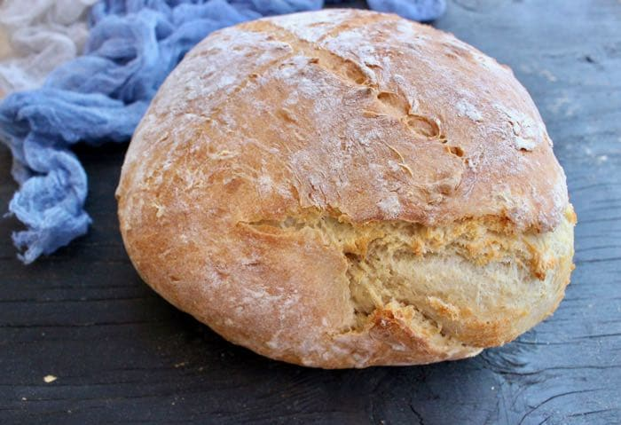

Italian Bread

Easy and quick artisan Italian rustic crusty bread at home, no knead, no machine, no dutch oven, with only 2 hour rise time. Made by hand with active dry instant yeast, flour and water then baked on a hot pizza stone.
3¼ cupsbread flour + more for dusting1½ tspfine sea salt1½ cupswarm water (110 degrees F/45 degrees C)2¼ tsp(1 package - 0.25 ounce) instant or active dry yeast
In a large mixing bowl or your kitchen aid mixer add the flour, salt and yeast. Use a spatula or the paddle attachment and mix to combine well.
Pour in the warm water and keep mixing until everything is incorporated and a soft dough has formed. It will still stick to the bottom of the bowl and that is OK.
Cover the bowl with some plastic wrap loosely and a tea towel. Allow the dough to rise at room temperature for 2 to 3 hours until doubled in size.
Sprinkle some flour on your kitchen counter and dump the bread dough on it. Flour your hands to help it out of the bowl as it will be sticky. Don’t panic, this is normal.
With floured hands fold the dough onto itself forming it into a round ball. Do not knead it, do not handle it anymore than you need to. Use a sharp knife and lightly carve an X in the top of the loaf or just make a few cuts across.
Place the bread dough on top of a lightly floured pizza peel, cardboard or parchment paper and allow it to rest while your oven is heating up.
Preheat your oven to 450”F with a pizza stone inside for about 45 minutes before baking the bread. Fill an oven proof bowl with ice cubes or cold water and place it on the bottom rack. This will create the steam that will cause the crust to become crispy as it bakes.
Once your oven is hot sprinkle the pizza stone with some semolina flour or corn meal and carefully slide the bread loaf on top. Bake the bread for about 30 to 45 minutes until golden brown all over and cooked through.
Transfer the bread to a cooling rack and allow to cool off completely before slicing into it. You can also let it cool inside the oven with the door slightly open.